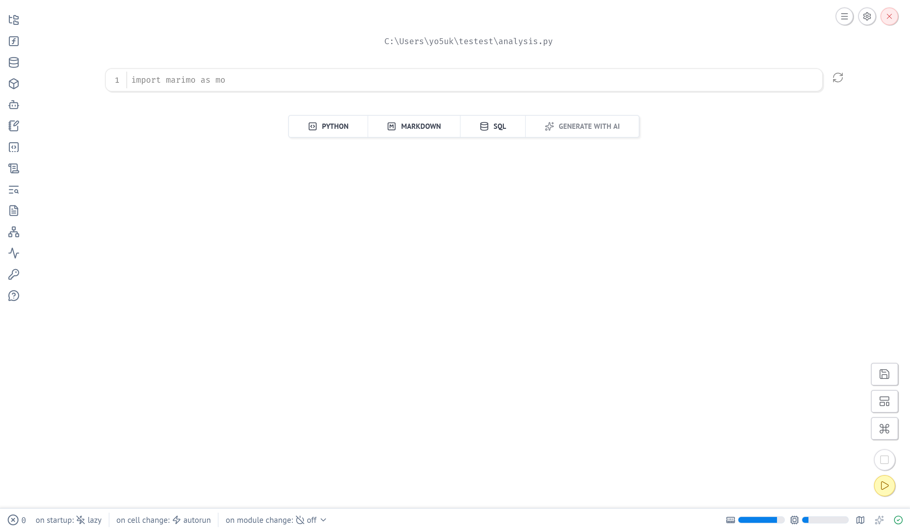
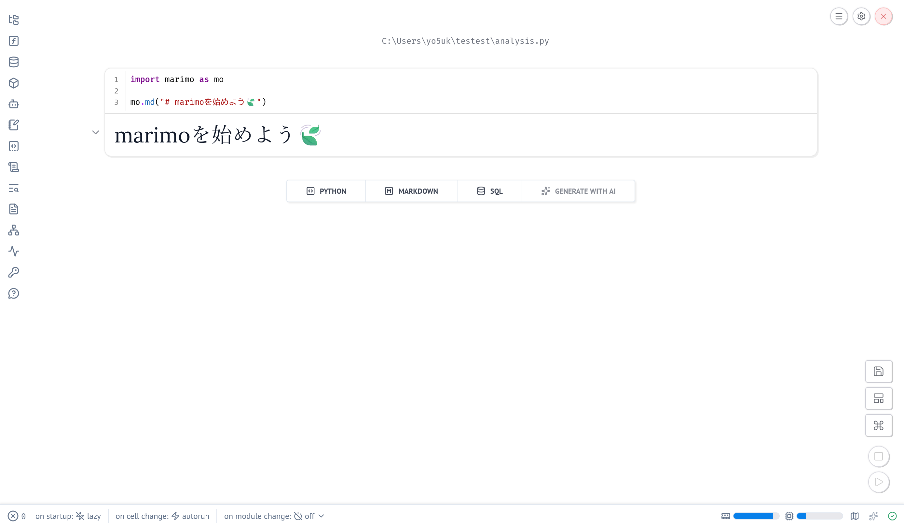
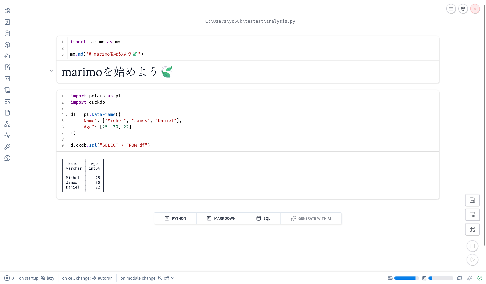
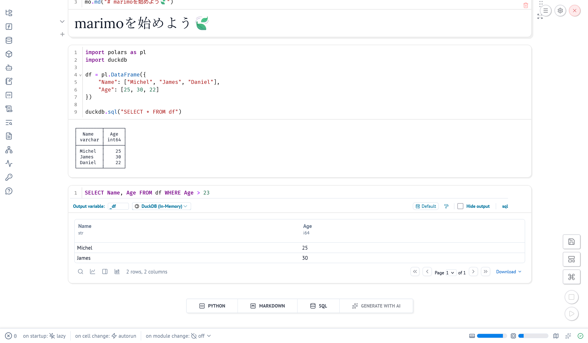
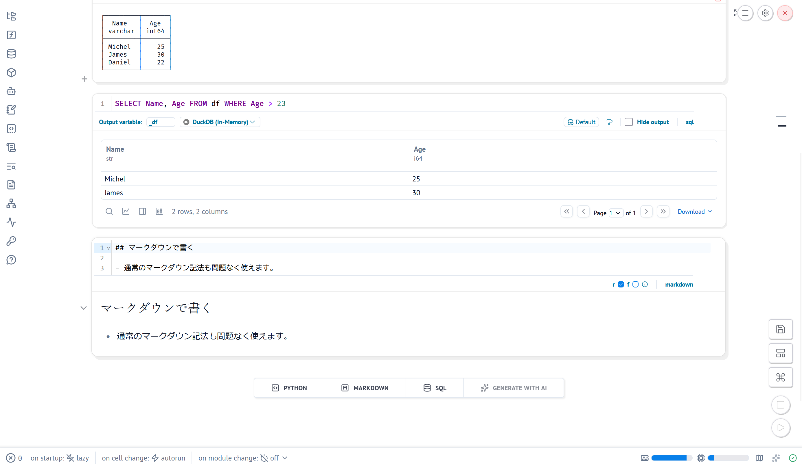
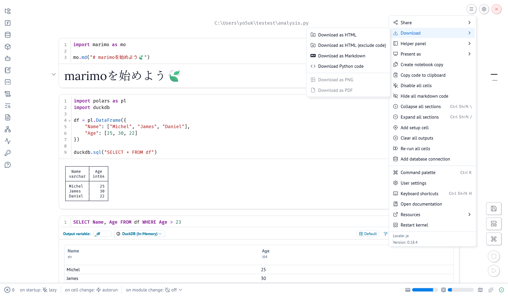
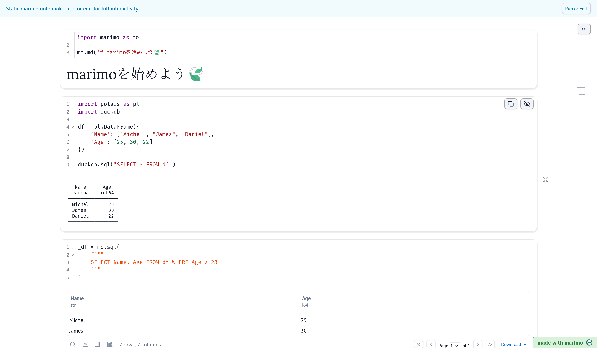
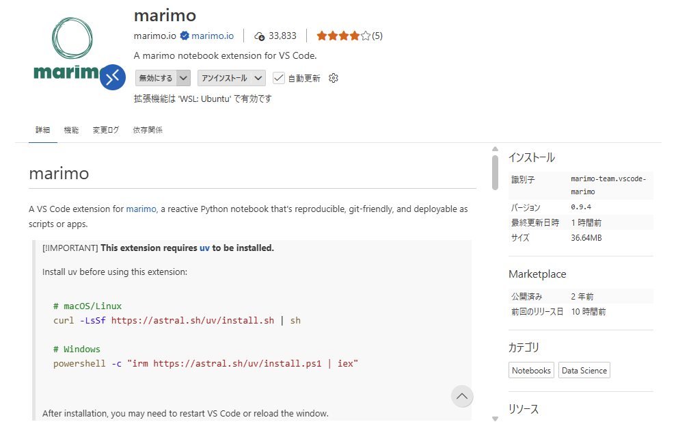
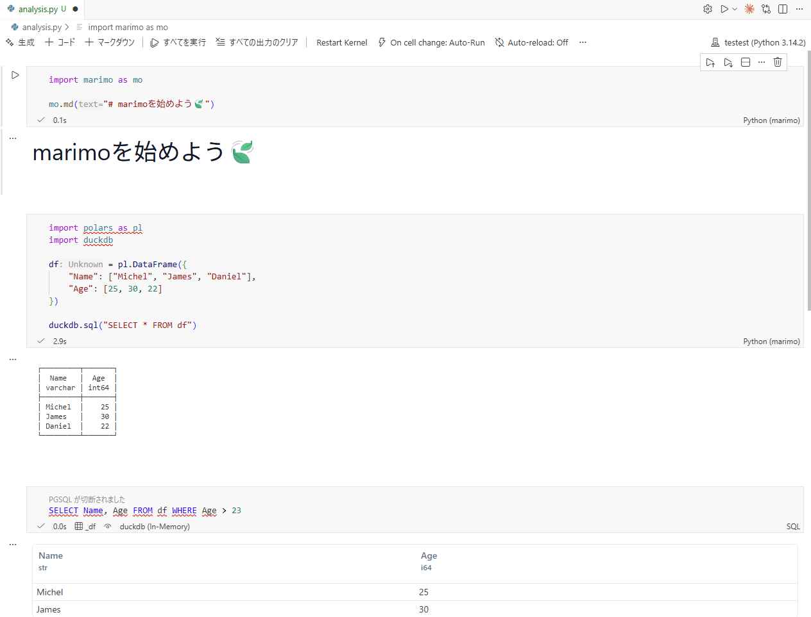

はじめに
Pythonでデータ分析を行う際、Jupyter Notebookは非常に便利なツールですが、次世代のノートブック環境であるmarimoを使うことで、より再現性高く、安定した分析環境を構築できます。
また、これまで単発の記事で紹介してきたuv、DuckDB、Polarsといったパッケージを組み合わせることで、高速かつ効率的なデータ処理が可能になると考えており、今回はそれらを活用したデータ分析環境の構築方法について書きたいと思います。
過去に紹介したそれぞれのツールについても改めて簡単に説明していきます。
また、これまでの記事については以下をご参照ください。

marimoについて
今回初登場となるのはmarimoです。marimoは
再現性が高く、Git に優しく、スクリプトやアプリとして展開できるリアクティブな Python ノートブック
であり、ノートブックであることからJupyter NotebookやQuartoと同様にコードと文章を組み合わせたファイルを作成できるのですが、以下のような特徴があります。
- ⚡リアクティブ：コードセルの依存関係を自動的に解析し、依存するセルを再実行（参考）
- 🛢️データのためのデザイン：データフレームやデータベースをSQLでクエリできたり、データフレームのフィルタ・検索が可能（DuckDBとの親和性。参考）
- 🐍ピュアPython：ファイルは
.ipynbなどではなく、純粋なPythonファイル（.py）として保存（Gitでの差分管理も容易に1）
この他にもインタラクティブなプロットを簡単に作成できたり、webアプリにエクスポートできたりと、Quartoと似たような機能も備えています。
リアクティブのメリット
ちなみにリアクティブというのは隠れた状態（hidden state）の問題を解決するのに役立ちます。
Jupyter Notebookではセルの実行順序が自由であるため、セル1でデータの整理、セル2で分析、セル3で可視化を行う場合に、セル2を実行したのだけれどやっぱりセル1が修正する必要があった、というときに、セル1を修正後セル2を実行し忘れると修正前のデータが使われたまま分析が進んでしまうという問題があります2。
以下のようなコードを考えてみてください。
# Cell 1
x = 10
# Cell 2
y = x * 2 # y = 20
# Cell 3
print(y) # 20と表示される# Cell 1を修正
x = 20 # xを20に変更
# Cell 2を実行し忘れ
# Cell 3
print(y) # 20と表示されてしまう（y=x*2なので本来は40になるはず）このようにセルの実行順序を間違えると、意図しない結果が出力されてしまうことがあります。
しかしmarimoではセル間の依存関係を自動的に解析し、セル1が修正された場合にはセル2も自動的に再実行されるため、上記のような問題を防ぐことができます。これは魅力的ですよね…！
それでは、次からは分析環境の構築に入っていきます。
環境構築
今回は以下の環境で進めていきます。
- OS: Windows 11
- Python: 3.14
- エディタ: VSCode
uvの設定
uvはPythonの新しい仮想環境管理ツールであり、高速に仮想環境を作成できることが特徴です。
詳しくはこちら。
uvのインストール
まずはuvをインストールしましょう。PowerShell3で以下のコマンドを実行してください。
powershell -ExecutionPolicy ByPass -c "irm https://astral.sh/uv/install.ps1 | iex"curl -LsSf https://astral.sh/uv/install.sh | shプロジェクトの作成
uvではuv init プロジェクト名でプロジェクトを作成できます。以下のコマンドを実行してください。
uv init marimo-projectするとmarimo-projectというディレクトリが作成されるので、このディレクトリをVSCodeで開いてください。
ここからはVSCodeのターミナルでコマンドを実行していきます4。
uvでパッケージをインストール
uvではuv add パッケージ名でパッケージをインストールできます。venv環境は裏で自動的に作成されるため、手動で仮想環境を作成する必要はありません。
今回使用するパッケージをインストールするには以下のコマンドを実行してください。
uv add marimo polars duckdb pyarrow sqlglotパッケージの管理
uvではrequirements.txtを使わずに、uv.lockというファイルでパッケージのバージョン管理を行います。uv addを実行すると自動的にuv.lockが生成され、自動でパッケージの依存関係も解決されます。
別環境などでuv.lockからパッケージをインストールしたい場合は、以下のコマンドを実行してください。
uv syncmarimoノートブックの作成
ここが本日のメインです。marimoノートブックを作成していきます。
marimoはuvを使ってインストールすることができ、先ほどのコマンドでインストールされているので、導入は簡単です。
Pythonファイルの作成
先述の通り、marimoノートブックは.pyファイルとして保存されます。まずはファイルを任意のディレクトリに作成しましょう。例えばanalysis.pyという名前にします。
ディレクトリの構造は以下のようなイメージです。
project-directory/
├── .venv/
├── .gitignore
├── analysis.py ← 作成したファイル
├── pyproject.toml
└── uv.lockmarimoの起動
marimoはVSCode上で動作するのではなく、コマンドラインから起動してブラウザで操作します。以下のコマンドを実行してください。
uv run marimo edit analysis.pyするとブラウザが起動し、以下のような画面が表示されます。

marimoノートブックの基本操作
画面を見ていただいてわかる通り、import marimo as moと最初に書かれており、その下にPython、Markdown、SQLのセルを追加できるようになっています。
まずはタイトルから書きたいとして、最初のセルに追記して以下のようにします。
import marimo as mo
mo.md("# marimoを始めよう🍃")実行ボタン（▶️）を押すと、以下のようにタイトルが表示されます。

続いてPythonコードを書いてみます。
import polars as pl
import duckdb
df = pl.DataFrame({
"Name": ["Michel", "James", "Daniel"],
"Age": [25, 30, 22]
})
duckdb.sql("SELECT * FROM df")実行ボタンを押すと、以下のようにデータフレームが表示されます。

また、SQLセルを追加して以下のように書くこともできます。
SELECT Name, Age FROM df WHERE Age > 23実行ボタンを押すと、以下のようにSQLの結果が表示されます。

SQLセルでは自動でDuckDBが使われ、SQL用の特別な設定も不要なのでとても便利だと思っています。
もちろんマークダウンセルでは通常のマークダウンと同様の記述ができます。

エクスポート
marimoノートブックは様々な形式にエクスポートできます。今回はQuartoでもおなじみのHTML形式にエクスポートしてみます。
コマンドラインからだと
uv run marimo export html analysis.py -o analysis.htmlで、エディタからだと

でエクスポートできます。
エクスポートされたHTMLファイルをブラウザで開くと、以下のように表示されます。

VSCode拡張機能
基本的な使い方は以上の通りなのですが、VSCode用の拡張機能も提供されており、VSCode上でmarimoノートブックを操作できるようになっています。
VSCodeの拡張機能マーケットプレイスでmarimoを検索してインストールしてください5。

インストール後、.pyファイルを開くと右上にmarimoのアイコンが表示されるので、それをクリックするとmarimoノートブックとして開くことができます。Jupyter NotebookのVSCode拡張機能と似たようなイメージです。

お好みで使い分けてみてください。
DuckDBとPolarsの活用
今回はmarimoにフォーカスしてきましたが、せっかくなのでDuckDBとPolarsの基本的な使い方についても簡単に紹介します。
uv × marimo × DuckDB × Polarsの組み合わせは非常に強力で、以下のような利点があります。
- uvで簡単に仮想環境を管理できる
- marimoで再現性の高いノートブックを作成できる
- DuckDBで大規模データも効率的にSQLクエリが可能
- Polarsで高速にデータ処理ができる
DuckDBの基本的な使い方
DuckDBは組み込み型の分析用データベースで、SQLを使ってデータを効率的に処理できます。
Python内で作ったデータフレームをクエリすることも、CSVやParquetファイルを直接クエリすることも可能です。
import polars as pl
import duckdb
# Polarsのデータフレームに対してSQLを実行
df = pl.DataFrame({
"product": ["A", "B", "A", "C", "B"],
"sales": [100, 200, 150, 300, 250],
"region": ["East", "West", "East", "West", "East"]
})
result = duckdb.sql("""
SELECT region, SUM(sales) as total_sales
FROM df
GROUP BY region
ORDER BY total_sales DESC
""")
# CSVファイルを直接読み込んでクエリ
result = duckdb.sql("""
SELECT *
FROM read_csv_auto('data.csv')
WHERE value > 1000
""")DuckDBの強みはデータをメモリに読み込まずにSQLクエリを実行できる点です。大規模なCSVやParquetファイルをPython内にすべて読み込むことなく直接クエリできるため、メモリ不足の問題を回避できます。
Polarsの基本的な使い方
Polarsは高速なデータフレームライブラリで、Rustで実装されているため、Pandasよりも高速に動作します。詳細な関数については説明しませんが、基本的な使い方は以下の通りです。
import polars as pl
# データフレームの作成
df = pl.DataFrame({
"Name": ["Alice", "Bob", "Charlie", "David"],
"Age": [25, 30, 35, 40],
"City": ["Tokyo", "Osaka", "Nagoya", "Fukuoka"]
})
# カラム選択とフィルタ
result = df.filter(pl.col("Age") > 30).select(["Name", "City"])
# 集計処理
summary = df.group_by("City").agg([
pl.col("Age").mean().alias("average_age"),
pl.col("Name").count().alias("count")
])Polarsはメソッドチェーンで処理を記述でき、かつ遅延評価（lazy evaluation）をサポートしているため、大規模データでも高速に処理できます。
# 遅延評価を使った処理
lazy_df = pl.scan_csv("large_data.csv") # ファイルを読み込まずスキャン
result = (
lazy_df
.filter(pl.col("value") > 100)
.group_by("category")
.agg(pl.col("value").sum())
.collect() # この時点で実際の計算が実行される
)DuckDBとPolarsの組み合わせ
DuckDBとPolarsを組み合わせることで、それぞれの長所を活かしたワークフローを構築できます。
import polars as pl
import duckdb
# DuckDBで大規模データから必要な部分を抽出
extracted = duckdb.sql("""
SELECT *
FROM read_parquet('large_data.parquet')
WHERE date >= '2025-01-01'
""").pl()
# Polarsで集計や変形処理
result = (
extracted
.with_columns([
(pl.col("value") * 1.1).alias("adjusted_value")
])
.group_by("category")
.agg([
pl.col("adjusted_value").sum().alias("total"),
pl.col("adjusted_value").mean().alias("average")
])
)DuckDBでの処理後にPolarsで集計等を行う場合、duckdb.sql(...).pl()でDuckDBの結果をPolarsのデータフレームとして取得できます。
このようにローデータからの抽出はDuckDB、集計や変形はPolarsという役割分担が可能で、しかも高速に処理できるのが非常に魅力的です。
おわりに
今回はuv、marimo、DuckDB、Polarsを組み合わせたデータ分析環境の構築方法について紹介しました。
とは言ってもmarimoの紹介がメインになってしまいましたが、2026年のPython環境としてはだいぶモダンな構成なのではないかと考えています。
こちら2026年1本目の記事ですが、このこぢんまり下サイトを見てくださっている方、今年もどうぞよろしくお願いいたします。
余談
リンクカードを実装しました。
Quartoにはリンクカードの機能がないので、これまでは
のようにcalloutを使ってリンクを紹介していたのですが、リンクカードの拡張機能を実装したことで

みたいにできるようになりました。
まだ修正は必要そうですが、2026年はこれでいきたいと思います！